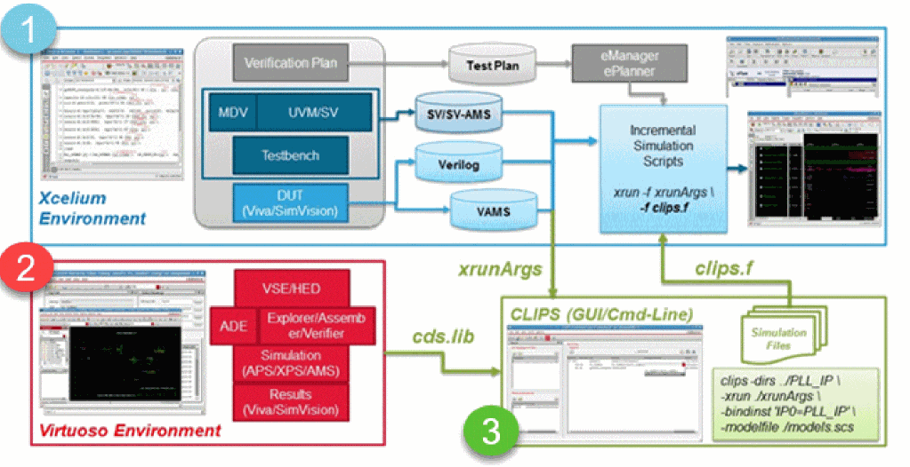

CLIPS Flow
The illustration given shows how CLIPS works with Virtuoso and Xcelium™ Logic Simulator:

- In Xcelium, a high-level simulation and verification is run after the top-down flow sets up the SoC-level verification methodology by using Metric-Driven Verification (MDV) with Universal Verification Methodology (UVM) or SystemVerilog (SV).
- In Virtuoso Analog Design Environment (ADE), a bottom-up mixed-signal IP is designed and verified.
-
CLIPS bridges the gap between the top-down flow of the Xcelium environment and the bottom-up flow of the Virtuoso environment. When you import the Xcelium simulation setup and the Virtuoso AMS IP configuration in CLIPS with the help of the
xrunArgsfiles and thecds.libfiles respectively, it automatically generates netlist and packages the IP config into an independent directory, and generates an incremental file,clips.f, on top of the existingxrunArgsfile. When both these files,xrunArgsandclips.f, are added to thexruncommand, the AMS IP automatically replaces its digital counterpart in the SoC simulation setup.
Return to top